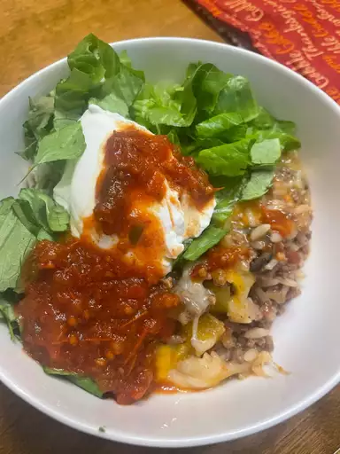

Taco Skillet

A one-pan pleaser made with lean, healthy ground beef, rice, black beans, and whatever other Mexican-ish ingredients you care to throw its way
Ingredients
- 1 pound ground beef
- 1 onion, chopped
- 1 (14.5 ounce) can diced tomatoes
- 2 cups water
- 1 cup converted rice
- 1 (1 ounce) package taco seasoning
- 1 cup shredded Mexican cheese blend
- 1 cup shredded lettuce
Directions
- Heat a large skillet over medium heat
- Cook and stir beef and onion until beef is browned, about 5 minutes
- Drain
- Stir tomatoes, water, rice, and taco seasoning into beef mixture and bring to a boil
- Reduce heat to medium-low, cover, and simmer until rice is tender, about 25 minutes
- Top with Mexican cheese blend and lettuce before serving